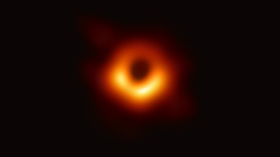

직접 하늘을 바라보자
가장 유명한 성운중에 하나이다. 밤하늘에 보이는 성운중에 가장 밝은 성운중 하나이며, 육안으로도 관측이 가능하다.
오리온 성운의 중심에서는 지금도 별들이 탄생하고 있는데 그중에서 가장 유명한것은 트라페지움이라는 갓 태어난 별들의 집단이다.

가을철 볼 수 있는 성단중 하나로, 광공해가 없는곳에서는 맨눈으로도 관측 가능하다.
두 개의 성단이 붙어있는 형태로 실제 거리도 크게 멀지 않다.
가장 유명한 성단 중 하나이며, 지구와 가장 가까운 성단중 하나이고, 광공해가 심한 지역에서도 맨눈으로 관측할 수 있는 아주 밝은 산개성단이다.
겨울철 황소자리 인근에서 볼 수 있으며, 황소자리 에는 히아데스 성단이라는 밝은 산개성단이 또 하나 존재한다.
가을철에 맨눈으로도 볼 수 있는 은하로써, 우리은하가 포함된 국부은하군에서 가장 크고 밝은 나선 은하이다.
은하 옆에 붙어있는 작은 원반들은 안드로메다의 위성은하로써, 작은것부터 각각 M32, M110이라 불린다.
대중적으로 가장 유명한 은하 중 하나로, 우리은하랑 비슷한 규모의 은하로써는 우리은하에서 가장 가까운 은하이다.
우리은하로부터 약 250만 광년 떨어져있고 서로 초속110km의 속도로 가까워 지고 있으며 약 40억년 후에 우리은하와 충돌하여 밀코메다라는 커다란 타원은하로 재 탄생할 예정이다.
멕시코의 솜브레로 모자를 닮아서 붙여진 이름이다.
봄철 처녀자리 인근에서 찾아 볼 수 있으며, 맨눈으로는 확인 할 수 없어 관측장비가 필요하다
여름철 거문고 자리에서 관측할 수 있는 성운이다.
행성상 성운으로써, 태양의 미래도 적색거성을 거쳐 행성상 성운으로써 생을 마감할것이다.
고리성운 중앙에는 백색왜성이 존재한다.
처녀자리에 위치한 타원은하이다.
중심부에서 뻗어나오는 강력한 에너지로 유명하며, 최초의 블랙홀 사진을 이 은하에서 촬영하였다.
영화 인터스텔라에서 표현한 블랙홀의 모습과 완전히 같은 것을 볼 수 있는데, 밝은 앞부분은 청색편이효과로 밝게, 뒷부분은 적색편이 현상으로써 어둡게 보인다.